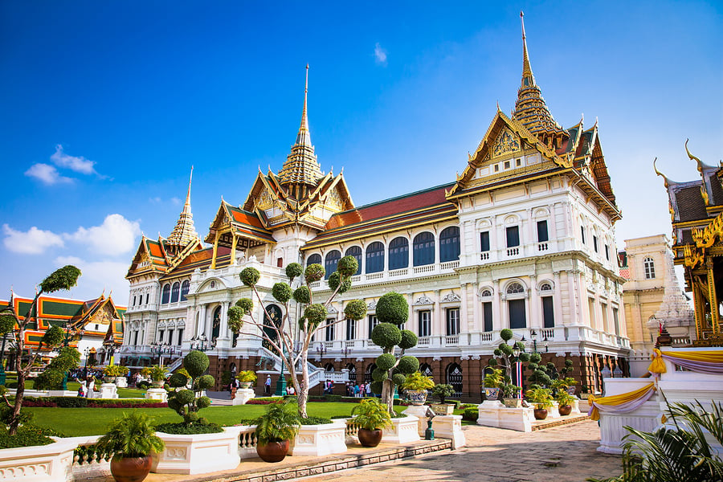

Grand Palace
Thailand's most sacred temple complex and former royal residence. Marvel at intricate architecture and the revered Emerald Buddha.
Entry: 500 THB | Hours: 8:30 AM - 3:30 PM | Dress Code: Cover shoulders & legs
Grand Palace, Wat Pho, and a sunset riverboat ride along the Chao Phraya
Start your Bangkok journey in the historic Rattanakosin area, home to the city's most important temples and the magnificent Grand Palace. This area represents the cultural and spiritual heart of Thailand.
Begin at Grand Palace to avoid crowds and heat
5-minute walk from Grand Palace
Local restaurant near the temples
Sunset boat ride along Chao Phraya
Thailand's most sacred temple complex and former royal residence. Marvel at intricate architecture and the revered Emerald Buddha.
Home to the massive 46-meter golden Reclining Buddha and traditional Thai massage school.
Scenic boat ride offering views of illuminated temples and city skyline at sunset.